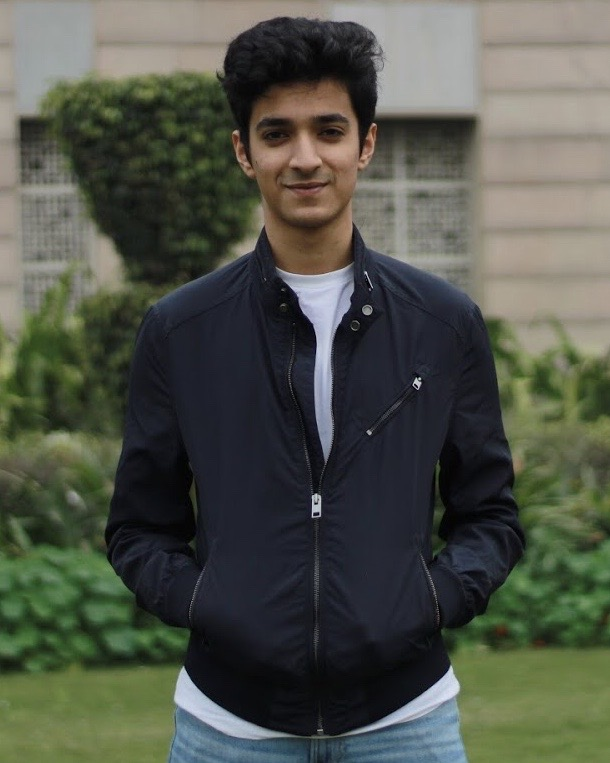

|  | I am an undergraduate student in Computer Science & Applied Mathematics at Indraprastha Institute of Information Technology Delhi. I am currently working as a Research Assistant under Prof. Anubha Gupta in the Signal Processing and Bio-Medical Imaging(SBI) Lab at IIIT Delhi. I have worked with Prof. Chetan Arora and Prof. Subhashis Banerjee, in the Graphics and Vision Lab at Indian Institute of Technology(IIT) Delhi. I have also worked with Prof. Jainendra Shukla, Prof. Saket Anand and Prof. Swapana Purandare on interdisciplinary applications of Computer Vision and Deep Learning. Last summer, I also got the opportunity of working at Digital Product School, UnternehmerTUM at Munich, Germany. There I worked under the guidance of Dr. Afsaneh Asaei, Head of Artificial Intelligence at UnternhemerTUM My quest for doing something useful for mankind and passion for computers and mathematics propelled me to undertake research in the fields of Computer Vision and Deep Learning (DL). I wish to continue working in these domains to develop systems in socially relevant areas that will make a significant difference in the lives of people at large. Update: I will be joining New York University's Courant Institute of Mathematical Sciences for M.S. in Computer Science next Fall. |
Email: am10719 at nyu.edu
Contact: +91 9971729258
Mail: C-166, Sarita Vihar, New Delhi, India
Breast Cancer Detection in Mammograms using Deep Neural Networks
Anvit Mangal, Surabhi. S. Nath
B.Tech Thesis, Indian Institute of Technology (IIT) Delhi, November 2019
[Report][Poster][Code]
Novel DNN based procedure for Stain Normalisation
Anvit Mangal, Shiv Kumar, Anubha Gupta
SBI Lab, Indraprastha Institute of Information Technology Delhi, April 2020
Paper under Review in MedIA Journal
GCTI-SN: Geometry-Inspired Chemical and Tissue Invariant Stain Normalization of Microscopic Medical Images
Anvit Mangal, Shiv Kumar, Anubha Gupta
SBI Lab, Indraprastha Institute of Information Technology Delhi, Feb 2020
Paper under Review in MedIA Journal
Pollen Source Analysis using Computer Vision
Anvit Mangal, Swapana Purandare, Jainendra Shukla
Independent Project, Indraprastha Institute of Information Technology Delhi, November 2019
[Abstract][Poster][Code]
Honeybee Health & Species Classification and Dense Counting in Beehives
Anvit Mangal, Swapana Purandare, Saket Anand
Independent Project, Indraprastha Institute of Information Technology Delhi, April 2018
[Report][Code]
Teaching Assistant: IIITD MTH573 Fall 2019 : Scientific Computing
Teaching Assistant: IIITD DES130 Spring 2018 : Introduction to Engineering Design
Teaching Assistant: IIITD CSE101 Fall 2018 : Introduction to Programming
Student Representative, Disciplinary Action Committee of IIITD, 2019/20
Member, Student Council, IIITD, 2019/2020
Member, Organising Committee, Odyssey '19, Odyssey'20,: Annual Cultural Fest of IIITD
Member, Organising Committee, Esya '18: Annual Technical Fest of IIITD
President, Photography Cell of IIITD: Tasveer, 2018/19
Member, Sports Council and Basketball Team, IIITD, 2018/2019
Taught basic high school algebra to underprivileged students, DLF Foundation, May 2017
My Instagram page, documenting some of my photography and travels :)